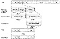

| Previous | Table of Contents | Next |
In the late 1960s, led by Horst Feistel and later by Walt Tuchman, IBM initiated a research program in computer cryptography called Lucifer. Lucifer is also the name of a block algorithm that came out of that program in the early 1970s [1482, 1484]. In fact, there are at least two different algorithms with that name [552,1492]. And [552] leaves some gaps in the specification of the algorithm. All this has led to more than a little confusion.
Lucifer is a substitution-permutation network, with building blocks similar to DES. In DES, the output of the function f is XORed with the input of the previous round to form the input of the next round. Lucifer’s S-boxes have 4-bit inputs and 4-bit outputs; the input of the S-boxes is the bit-permuted output of the S-boxes of the previous round; the input of the S-boxes of the first round is the plaintext. A key bit is used to choose the actual S-box from two possible S-boxes. (Lucifer represents this as a single T-box with 9 bits in and 8 bits out.) Unlike DES, there is no swapping between rounds and no block halves are used. Lucifer has 16 rounds, 128-bit blocks, and a key schedule simpler than DES.
Using differential cryptanalysis against the first incarnation of Lucifer, Biham and Shamir [170, 172] showed that Lucifer, with 32-bit blocks and 8 rounds, can be broken with 40 chosen plaintexts and 229 steps; the same attack can break Lucifer with 128-bit blocks and 8 rounds with 60 chosen plaintexts and 253 steps. Another differential cryptanalytic attack breaks 18-round, 128-bit Lucifer with 24 chosen plaintexts in 221 steps. All of these attacks used the strong DES S-boxes. Using differential cryptanalysis against the second incarnation, they found the S-boxes to be much weaker than DES. Further analysis showed that over half the possible keys are insecure [112]. Related-key cryptanalysis can break 128-bit Lucifer, with any number of rounds, with 233 chosen-key chosen plaintexts, or with 265 chosen-key known plaintexts [158]. The second incarnation of Lucifer is even weaker [170, 172, 112].
Some people feel that Lucifer is more secure than DES because of the longer key length and lack of published results. This is clearly not the case.
Lucifer is the subject of several U.S. patents: [553, 554, 555, 1483]. They have all expired.
W. E. Madryga proposed this block algorithm in 1984 [999]. It is efficient for software: It has no irritating permutations and all its operations work on bytes.
His design objectives are worth repeating:
DES had already met objectives one through nine, but the next three were new. Assuming that the best way to break the algorithm was through brute force, a variable-length key would surely silence those who thought 56 bits was too low. They could implement this algorithm with any key length they desired. And, for anyone who has ever attempted to implement DES in software, an algorithm that took software implementations into account would be welcomed.
Description of Madryga
Madryga consists of two nested cycles. The outer cycle repeats eight times (although this could be increased if security warrants) and consists of an application of the inner cycle to the plaintext. The inner cycle transforms plaintext to ciphertext and repeats once for each 8-bit block (byte) of the plaintext. Thus, the algorithm passes through the entire plaintext eight successive times.
An iteration of the inner cycle operates on a 3-byte window of data, called the working frame (see Figure 13.1). This window advances 1 byte for each iteration. (The data are considered circular when dealing with the last 2 bytes.) The first 2 bytes of the working frame are together rotated a variable number of positions, while the last byte is XORed with some key bits. As the working frame advances, all bytes are successively rotated and XORed with key material. Successive rotations overlap the results of a previous XOR and rotation, and data from the XOR is used to influence the rotation. This makes the entire process reversible.
Because every byte of data influences the 2 bytes to its left and the 1 byte to its right, after eight passes every byte of the ciphertext is dependent on 16 bytes to the left and 8 bytes to the right.
When encrypting, each iteration of the inner cycle starts the working frame at the next-to-last byte of the plaintext and advances circularly through to the third-to-last byte of the plaintext. First, the entire key is XORed with a random constant and then rotated to the left 3 bits. The low-order 3 bits of the low-order byte of the working frame are saved; they will control the rotation of the other 2 bytes. Then, the low-order byte of the working frame is XORed with the low-order byte of the key. Next, the concatenation of the 2 high-order bytes are rotated to the left the variable number of bits (0 to 7). Finally, the working frame is shifted to the right 1 byte and the whole process repeats.

Figure 13.1 One iteration of Madryga.
The point of the random constant is to turn the key into a pseudo-random sequence. The length of this constant must be equal to the length of the key and must be the same for everyone who wishes to communicate with one another. For a 64-bit key, Madryga recommends the constant 0x0f1e2d3c4b5a6978.
Decryption reverses this process. Each iteration of the inner cycle starts the working frame at the third-to-last byte of the ciphertext and advances in the reverse direction circularly through to the second-to-last byte of the ciphertext. Both the key and the 2 ciphertext bytes are shifted to the right. And the XOR is done before the rotations.
| Previous | Table of Contents | Next |
){kind=link}
){kind=link}